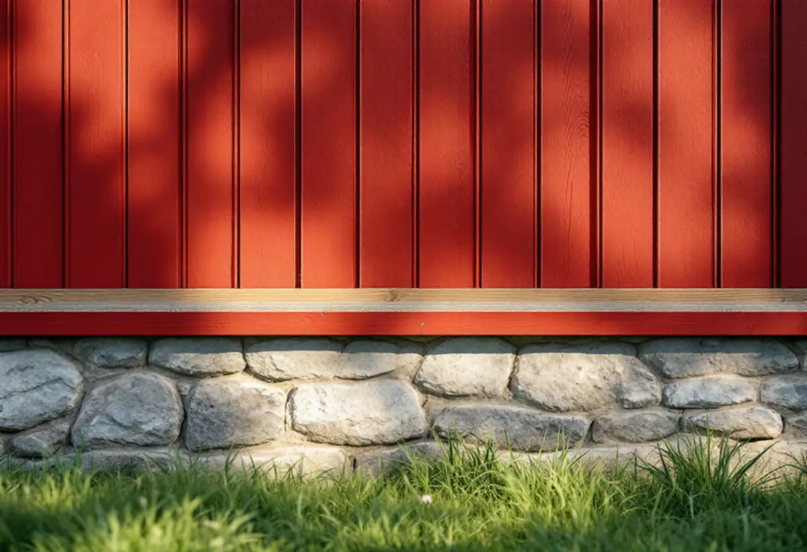

Var ligger huset?
Vi tar reda på om fastigheten ligger i stadskärnan, i dalgången eller i ett villaområde och vad som gäller där.
I Sigtuna stad ska ett putsat hus enligt kommunens bevarande- och förnyelseplan få förbli putsat, och den som vill isolera utvändigt får en tydlig varning om sockeln. I dalgången mellan Odensala och Hova finns egna riktlinjer, och i villaområdena kring Märsta gäller detaljplanen och lagens krav på varsamhet. Geal Entreprenad AB renoverar fasader i hela Sigtuna kommun, med gratis platsbesök och skriftligt kostnadsförslag.
Bevarande- och förnyelseplanen för Sigtuna stad, antagen 2019, utgår från att ett hus vid ombyggnad och renovering ska behålla det utseende det har i dag. Planen skriver uttryckligen att ett putsat hus bör få vara putsat även i fortsättningen, om inte särskilda skäl talar för en förändring. Samtidigt öppnar den för att rätta till olämpliga detaljer som tillkommit senare, till exempel en olämplig fasadyta eller felaktig färgsättning.
Stadskärnan består inte bara av trähus. I kvarteret Koppardosan vid Stora gatan beskriver planen två putsade tegelbyggnader i två våningar från 1940-talet, ritade av S. L. Ljungberg vid Riksbyggens arkitektkontor, och två putsade bostadshus från 1950-talet ritade av Bengt Romare. Det ena 50-talshuset har rödfärgad och det andra gulfärgad puts, båda med vita fönsteromfattningar.
Boverket förklarar varför putsen behöver skötas med omsorg. Kalkputs kan suga upp, transportera och avge fukt utan att skada stommen, men vid för stor fuktbelastning uppstår skador, och putsbortfall beror i de allra flesta fall på fukt. Vi letar därför först efter var vattnet kommer in och lagar sedan med ett bruk som liknar det som redan sitter på väggen.

Planen pekar ut en detalj som lätt försvinner vid en renovering. Stensockeln på de äldre husen är ofta bredare än själva väggen, och i anslutningen mellan panel och sockel sitter därför en dropplist. Den förändras kraftigt vid utvändig tilläggsisolering om inga särskilda åtgärder vidtas, och planens slutsats är att utvändig isolering bör undvikas och att invändig isolering är att föredra.
Blir det ändå en utvändig isolering ska den nya fasadbeklädnaden enligt planen utformas i princip lika som den gamla, med oförändrat taksprång, utflyttade fönster och anpassad sockel. Boverket beskriver vad som annars händer: fönster och dörrar hamnar längre in, takfoten skjuter ut mindre och fasaden kan hänga ut över sockeln. Utåtgående fönster kan dessutom bli omöjliga att haka av när de ska renoveras.
Invändig isolering gör i sin tur väggens utsida kallare, och Boverket nämner frostsprängning i tegel och sten och röta i trä. Vi bedömer därför väggen innan isoleringen väljs. Ska taket läggas om samtidigt finns mer under takrenovering i Sigtuna.
Inom planens område finns ungefär 60 gällande detaljplaner, och kommunen fattar fortfarande bygglovsbeslut med hjälp av stadens äldsta stadsplan C4 från 1925. Planen förklarar de vanligaste skydden. En skyddsbestämmelse, q, kan omfatta både utformning, material, teknik och underhåll. En varsamhetsbestämmelse, k, beskriver vilka egenskaper byggnaden ska ha, exempelvis färg och fasad- eller taktäckningsmaterial.
Inom riksintresset för kulturmiljövården i Sigtuna stad gäller inte de bygglovsbefriade åtgärderna, och fasadförändringar kräver därför bygglov. Oavsett lovplikt ska ändringar enligt plan- och bygglagen utföras varsamt, så att byggnadens värden inte går förlorade.
Där en q-bestämmelse styr underhållet lagar vi hellre än byter. Färgen på samma fasad beskrivs på sidan om målare i Sigtuna.
Riktlinjerna för dalgången mellan Odensala och Hova antogs i december 2020. De konstaterar att fasadmaterialet på landsbygden nästan uteslutande har varit trä. Sekelskiftesvillorna har fasader av locklistpanel eller spontad panel, och för nya hus rekommenderas stående träpanel, locklistpanel, lockpanel eller spontad panel. Gavelspetsar och partier mellan fönstren bör inte utföras i avvikande material eller färg, eftersom fasaden ska uppfattas som en enhet.
För villorna och radhusen kring Märsta och Rosersberg finns inget motsvarande program. Kommunen skriver ändå att byggnader som inte är utpekade kan vara så värdefulla att de behöver särskild hänsyn, och att ursprungliga material och detaljer i första hand bör behållas eller ersättas med samma material.
Enligt plan- och bygglagen krävs i dag inget bygglov för att byta kulör eller material på fasaden på ett en- eller tvåbostadshus. Undantagen är hus som är särskilt värdefulla, ligger i ett särskilt värdefullt område eller omfattas av utökad lovplikt i detaljplanen. Mer om material och metoder finns på sidan om fasadrenovering.
Vi tar reda på om fastigheten ligger i stadskärnan, i dalgången eller i ett villaområde och vad som gäller där.
Puts, panel, sockel och dropplist gås igenom, och vi markerar var fukten tar sig in.
Ska huset isoleras jämför vi in- och utvändig lösning med hänsyn till sockel och fönster.
Lagning, omputsning, panelbyte och isolering prissätts som separata poster.
Inom riksintresset tar vi fram material- och kulörbeskrivning till din ansökan.
Arbetet görs i torrt väder, och vi går igenom fasaden tillsammans efteråt.
Skatteverket räknar att byta, reparera och mura fasader, tilläggsisolera och måla fasader som rotarbete i ett småhus, liksom att montera och montera ner ställningar i samband med arbetet. Är huset yngre än fem år får arbetet bara återställa det till ursprungligt skick.
Avdraget är 30 procent av arbetskostnaden, högst 50 000 kr per person och år och högst 75 000 kr tillsammans med rutavdrag. Material och resor ger inget avdrag, och du ska äga bostaden när arbetet utförs. Geal drar avdraget direkt på fakturan.
Hur stora partier av putsen som har släppt, om sockel och dropplist måste byggas om, om isoleringen görs in- eller utvändigt och om en bygglovsansökan behöver förberedas. Ett trähus i dalgången och ett putsat hus i stadskärnan kräver olika material. Efter ett gratis platsbesök får du ett skriftligt kostnadsförslag.
Puts, panel och tilläggsisolering.
Fasadrenovering i Stockholm →Takbyte, takbesiktning och plåtarbeten.
Takläggare i Sigtuna →Sigtuna stad, Märsta och Arlanda.
Takrenovering i Sigtuna →Anmälan, fläkt och dusch i stället för badkar.
Badrumsrenovering i Sigtuna →Nytt hus, gästhus och större tomt.
Byggföretag i Sigtuna →Arlanda, ljudisolering och fönster i Sigtuna.
Fönsterbyte i Sigtuna →Bevarandeplanen, gammalt glas och fönsterkulörer.
Fönsterrenovering i Sigtuna →Golv på platta, fuktmätning och radon.
Golvläggare i Sigtuna →Stadskärnan, Märsta och Rosersberg.
Målare i Sigtuna →Plåttak, rännor och beslag i Sigtuna.
Plåtslagare i Sigtuna →Staket, dörrar och gårdshus i stad och dalgång.
Snickare i Sigtuna →Ny tapet i äldre trähus.
Tapetsering i Sigtuna →